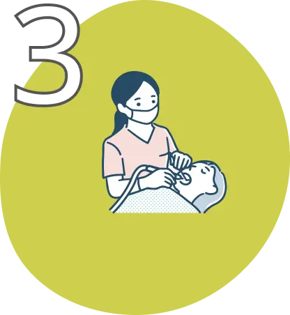

ずっと笑顔で暮らせるように
smile forever
歯の健康はその人の笑顔や人生にまで影響します。
私達は皆様の悩みに寄り添った施術を心がけています。
Our Concept
当院について

当院では治療はもとより普段の正しいケアや歯の磨き方から歯垢のたまりにくいケアまで、しっかりサポートします。

当院では治療はもとより普段の正しいケアや歯の磨き方から歯垢のたまりにくいケアまで、しっかりサポートします。

当院では治療はもとより普段の正しいケアや歯の磨き方から歯垢のたまりにくいケアまで、しっかりサポートします。
Medical Treatment
診療内容について
Customer Reviews
皆様のお声
この5年のうちに歯の細りが気になり始め、ついでに旦那も一緒に診察を受けさせてもらいました。
割と健康かな？と思っていたのですが見えない箇所の問題が検査で色々わかり・・・丁寧で親切な対応で不安なく迅速に治療をうけれました。今では定期的に受診して歯の健康を維持しながら楽しく日々を送れています！ありがとうございました！
この5年のうちに歯の細りが気になり始め、ついでに旦那も一緒に診察を受けさせてもらいました。
割と健康かな？と思っていたのですが見えない箇所の問題が検査で色々わかり・・・丁寧で親切な対応で不安なく迅速に治療をうけれました。今では定期的に受診して歯の健康を維持しながら楽しく日々を送れています！ありがとうございました！
News
お知らせ
- Aについて 4月の臨時休診日について
- Bについて 9月のお盆休診日について
- Cについて 9月の歯科検診日時について
木立歯科クリニックの診察時間
| 診療時間 | 月 | 火 | 水 | 木 | 金 | 土 | 日 | |
|---|---|---|---|---|---|---|---|---|
| 午前 | 9:00AM~ 11:30PM |
● | ● | ● | ● | ● | ● | ー |
| 午後 | 12:00AM~ 18:30PM |
● | ● | ● | ー | ● | ー | ー |
Access
アクセス
木立歯科クリニック
〒000-000
〇〇県〇〇市〇〇町1-1-1
ヘイズバレー2階
〇〇駅3番出口から徒歩5分
オークストリート前の並びです